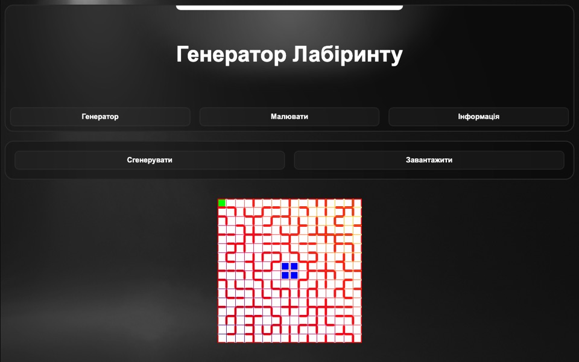

Abschlussprojekt · Juni 2024
Labyrinth-Editor für Micromouse
«Сторінка для створення лабіринтів»
Eine Webanwendung zum Erstellen von Labyrinthen für Micromouse-Roboterwettbewerbe. Das 16×16-Feld ist in 16 Sektoren geteilt; der Generator wählt für jeden einen vorbereiteten 4×4-Block und setzt daraus ein vollständiges Labyrinth zusammen. Labyrinthe lassen sich auch von Hand zeichnen, als JSON exportieren und wieder importieren.